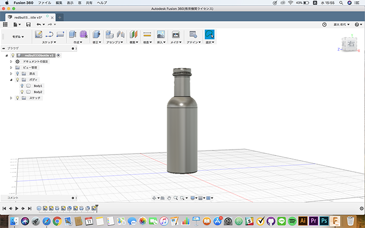
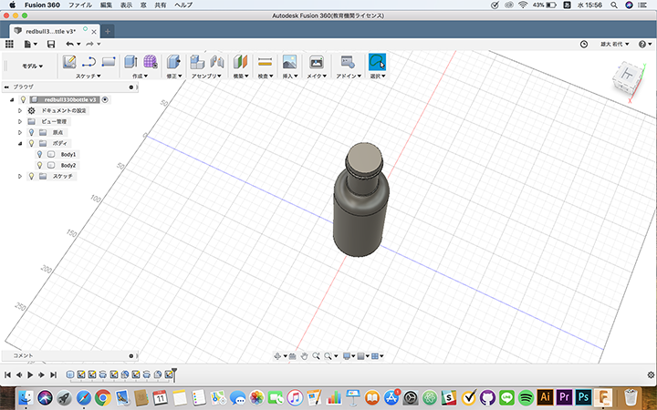
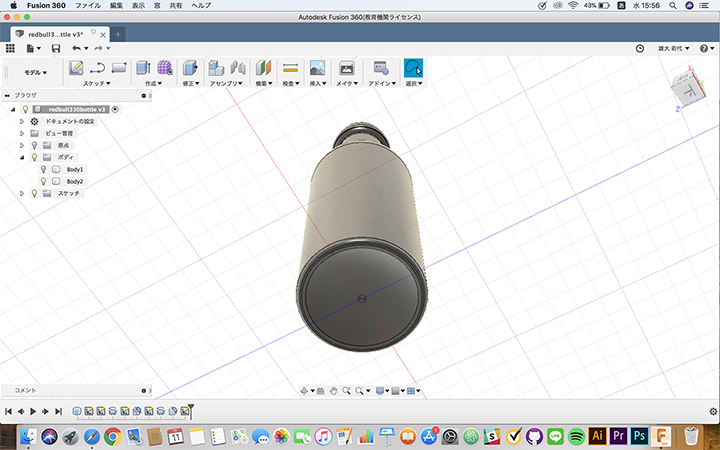

製造工程研究
Fusion360を使用して３Dデータを作成する。
レッドブル・エナジードリンク 330ml アルミボトルのボトルを作成する。
計測に使用した工具
定規
ノギス
定規で高さを計測、ノギスでボトルの直径を計測し一番下から作っていき最後に底の凹みを作った。



感想
ボトルの底の凹みとキャップの凹み部分などうまく計測ができなかった部分が作るのに特に難しかった。
なぜこの形になったのかわからないが、こういうデザインにしているのには意味があると思うので調べてみたいと思った。